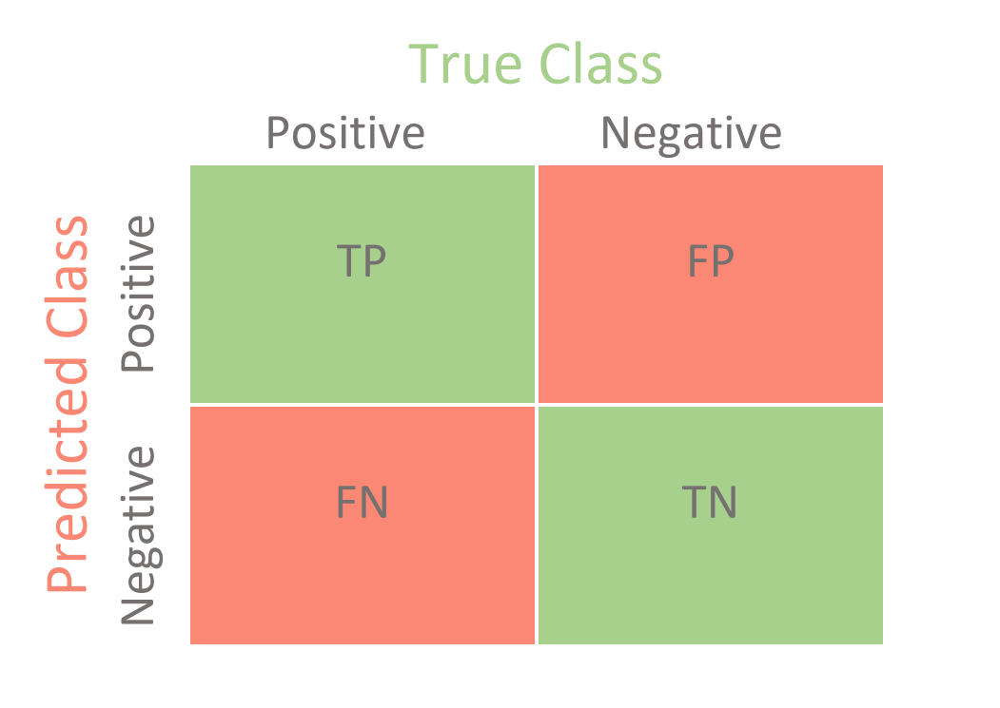
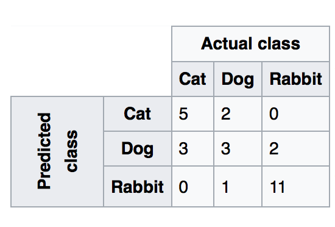
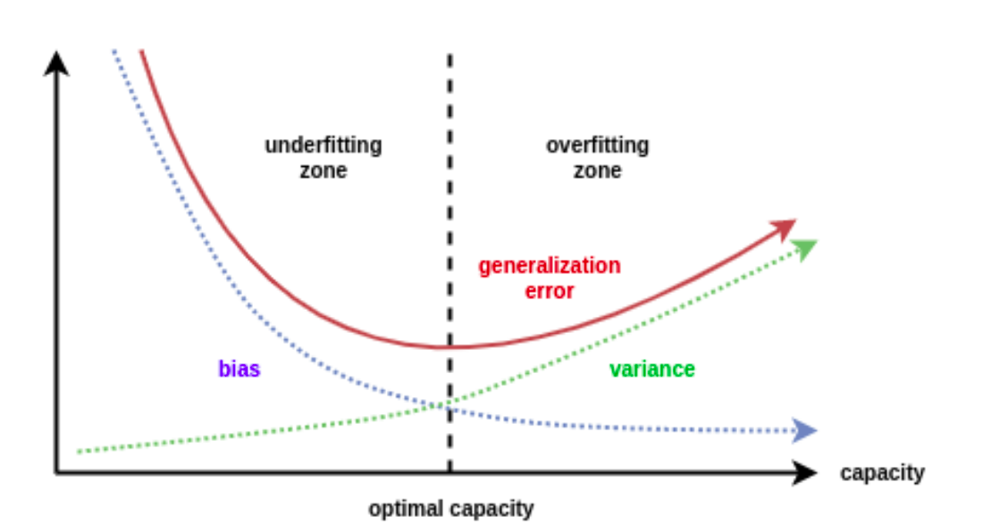
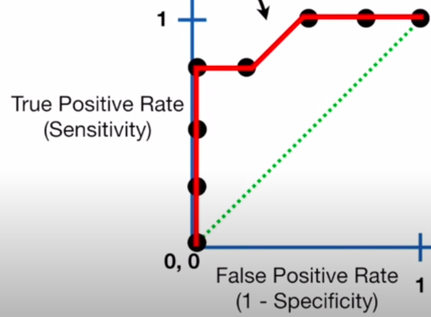
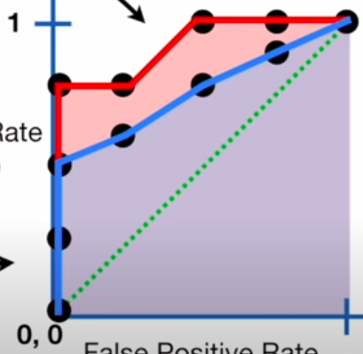

§ MALIS: Generic ML Concepts
§ Cross-Validation
Allows us to compare different ML methods! When working with a dataset for training a learner:
- Naive Idea → Use all data
- Better Idea → Use x percent for training and y percent for testing
the issue is how do we know that the selection is good ? The lord answers through
K-Fold Cross Validation → split data into K blocks → For each K-block train the data on the rest of the K-1 blocks and test it on K block and log the metric → Average out the performance and use this for comparison
- Leave one out cv → us each sample as a block
§ Confusion Matrix
Plot the Predicted Positives and Negatives vs, Ground truths :

NOTE:
- The diagonal always shows the True values
- The non-diagonal elements ar always false
The major Metrics are:
- Sensitivity → Positive Labels correctly predicted : TP+TNTP
- Specificity → Negative Labels Correctly predicted : TN+FNTN
Let's say we test out logistic regression against Random Forests to classify patients with and without heart disease. Then the algorithm with the higher sensitivity should be chosen if our target is to classify patients with heart disease, while the algorithm with higher specificity should be chosen if we want to classify patients without heart disease
§ What about Non-binary classification
Calculate these values for each label by treating the values as Label and !label. For if we have three labels, we take the true positives as all the classifications done for label i and the TN as all the misclassifications done for label i → This means that if the data actually belonged to the other classes and was still classified as belonging to i, then it is a False Positive. Similarly, we take True Negative as all the classifications done on all other classes except out current label and the false negatives as the classifications. Let's take the following example:

Here, for The class Cat, we get :
- Sensitivity =5/(5+3+0)=5/8=0.625
- Specificity =(3+2+1+11)/(3+2+1+11+2)=17/19=0.894
Other major metrics are:
- Accuracy → (TP+TN)/total=(100+50)/165=0.91
- Misclassification Rate → (FP+FN)/total=(10+5)/165=0.09 = 1 - accuracy
- Precision → TP/predictedyes=100/110=0.91
- TP Rate → TP/yes=100/105=0.95
- FP Rate → FP/No=10/60=0.17
The idea is to strike a balance between things and get hang of how our classifier is actually performing!
§ Bias and Variance
- Bias → The inability for an algorithm to capture the true relationship in the data. Formally, it is the inherent error that we obtain from the model even with infinite training data due to the classifier being biased to a particular solution
- Variance → Difference in fits between the training and the testing data, i.e the error caused from sensitivity to fluctuations in the training set
High bias means the learned model is simpler and might not fit the training data very well and when it does not perform so well on the test set →
Underfitting. High variance means that the learned model is has a better fit to the training set but does not perform so well on the test set →
Overfitting
- What is happening is that the training set can be viewed essentially as a the true relationship curve plus some noise that scatters the data around the curve. This is the same for training and test sets. now, if our model fits so well to the training set that it is able to exactly pass through each data point, it has actually fitted to the the noise that scattered the data from the actual signal. Thus, is has so much variability that it won't perform good on other datasets which might inherently be sampled from the same curve with some random noise that scatters the data a bit differently. This is why the model has over-fitted to the training set by adapting to the noise.
In general, Error depends on the square of bias and the directly varies with variance and Noise:
E=B2+V+N
And this variation can be plotted as follows:

§ ROC and AUC
The whole idea of ROC curve is adjusting our classification threshold for example in the case of logistic regression - to mess-around with the rates of TP and FP. We plot these values for each threshold against each other on a graph, as shown:

- Here, we have plotted sensitivity a.k.a the True positive rate against FP Rate a.k.a 1 - specificity. At point (1,1) we see that our classifier is classifying all samples as TP and FP. Now, let's say our problem is to predict whether the patient has a certain disease or not, then this is not acceptable since the FP Rate is high, and we can't afford False Positive classification. So, we adjust our threshold and see the sensitivity remain the same through the next two points on the left, but the FP Rate decrease, which means our model is getting better. Then we see that both the rates fall and then, finally, our model reaches a level where the TP Rate is positive while the FP rate is negative. This is a desirable performance for our purposes. In case we are willing to accept some FPs for a better TP classification, we can select points on the right that increase the TP but also end up having some misclassifications
AUC -Area Under the Curve - is used to compare the performance of two classifiers, as shown below:

Since the AUC is greater for the red curve, and so the model that it represents is better since for the same levels of FP, it delivers more TPs